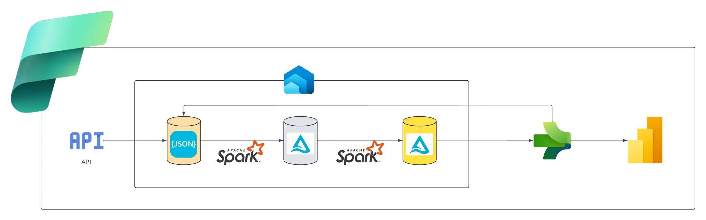

TOSIN OGUNDANA
DATA ANALYTICS PORTFOLIO
Tosin Ogundana is highly proficient in utilising Python and SQL to solve data analytics, data engineering, and artificial intelligence challenges.
Highly competent in creating interactive dashboards and reports with Power BI and Tableau.
@Tosin Ogundana.
This project demonstrates an end-to-end data engineering solution that profiles, cleanses, validates, enriches, and visualizes a sample of UK company records.
It combines original company data with external enrichment from the Companies House API and Postcodes.io, prioritizing high-quality, validated registered contact information.

This project developed an automated end-to-end data engineering and analysis pipeline utilising Microsoft Fabric’s Data Factory, Data Engineering, and Power BI experiences.
Ingesting Earthquake events data from usgs. Technologies Used: Python, PySpark, Fabric.
Designed and developed an SQL datawarehouse by integrating datasets extracted from CRM and ERP
systems, resulting in a centralized and scalable data repository adopting mediallion architecture.
Developed an HR Employee Distribution Dashboard using SQL for data analysis and Power BI for data visualization.
The dashboard provided key insights into employee demographics, including gender and race distribution,
age segmentation, office locations, average tenure, and departmental turnover rates.
Developed an interactive Tableau executive dashboard for a bike store, highlighting key business KPIs and
revenue insights across various dimensions to drive data-informed decision-making and business growth.

Developed a predictive machine learning model for fitness intelligent application that automatically
recognise and predict humans activities.
I developed a sales management dashboard leveraging SQL for data analysis and Power BI for data visualisation.
The report provided a thorough overview and interactive dashboard on sales performance over time in comparison
with budget, per customers, and per products.

Extracted an order transaction dataset via API into a Python environment for data cleaning and aggregation using Pandas,
including date handling and calculated columns. Connected to a SQL database, loaded the cleaned data, and utilized SQL
queries to derive business insights such as top revenue-generating products, best-selling products, month-over-month growth,
and profit-based growth analysis.

I developed a Convolutional Neural Network (CNN) model to assist medical practitioners in detecting and classifying chest X-ray
(CXR) images into two categories: "Pneumonia" and "Normal." To enhance interpretability, Class Activation Mapping (CAM) was
applied to highlight potential pneumonia-affected regions in the images. The model was trained on a dataset of 5,856 pediatric
chest X-ray images (JPEG format), categorized into the two aforementioned classes.